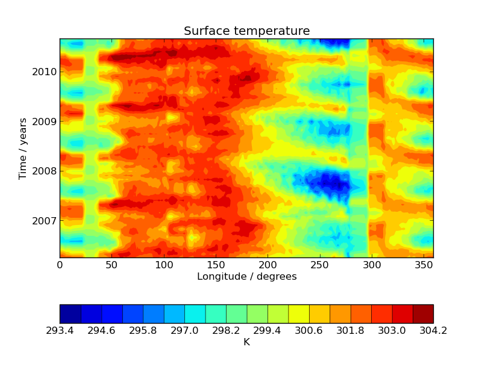

Iris 0.89
This example demonstrates the creation of a Hovmoller diagram with fine control over plot ticks and labels. The data file being loaded is daily SST from the Met Office OSTIA project. As the plot is designed to show annual variability, monthly data would be sufficient, therefore a constraint is used to filter all data which does not fall on the first day of the month. A more sophisticated filtering scheme could be applied in practice, perhaps taking the monthly mean as the data to plot.

"""
Hovmoller diagram of monthly surface temperature
================================================
This example demonstrates the creation of a Hovmoller diagram with fine control over plot ticks and labels.
The data file being loaded is daily SST from the Met Office OSTIA project. As the plot is designed to show
annual variability, monthly data would be sufficient, therefore a constraint is used to filter all data which
does not fall on the first day of the month. A more sophisticated filtering scheme could be applied in practice,
perhaps taking the monthly mean as the data to plot.
"""
import matplotlib.pyplot as plt
import matplotlib.dates as mdates
import iris
import iris.quickplot as qplt
import iris.unit
def first_day_of_month(cube):
"""
Returns true if the given cube's time bound is the first day of a month
"""
time = cube.coord('time')
# get a datetime object for the time coordinate's lower bound
dt = time.units.num2date(time.bounds[0, 0])
# return true if the day of month is 1
return dt.day == 1
def main():
fname = iris.sample_data_path('PP', 'ostia', 'ostia_sst_200604_201009_N216.pp')
# load a single cube of surface temperature between +/- 5 latitude, where each constituent field was the first day
# of the month
cube = iris.load_strict(fname, iris.Constraint('surface_temperature', latitude=lambda v: -5 < v < 5) &
iris.Constraint(cube_func=first_day_of_month)
)
# Take the mean over latitude
cube = cube.collapsed('latitude', iris.analysis.MEAN)
# Now that we have our data in a nice way, lets create the plot
# contour with 20 levels
qplt.contourf(cube, 20)
# Put a custom label on the y axis
plt.ylabel('Time / years')
# Stop matplotlib providing clever axes range padding
plt.axis('tight')
# As we are plotting annual variability, put years as the y ticks
plt.gca().yaxis.set_major_locator(mdates.YearLocator())
# And format the ticks to just show the year
plt.gca().yaxis.set_major_formatter(mdates.DateFormatter('%Y'))
plt.show()
if __name__ == '__main__':
main()